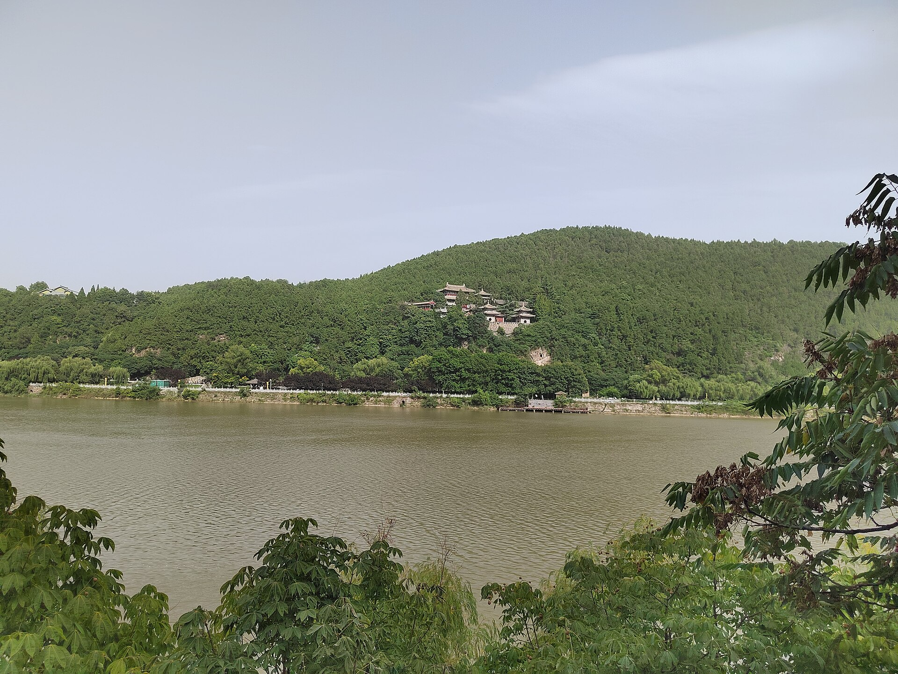
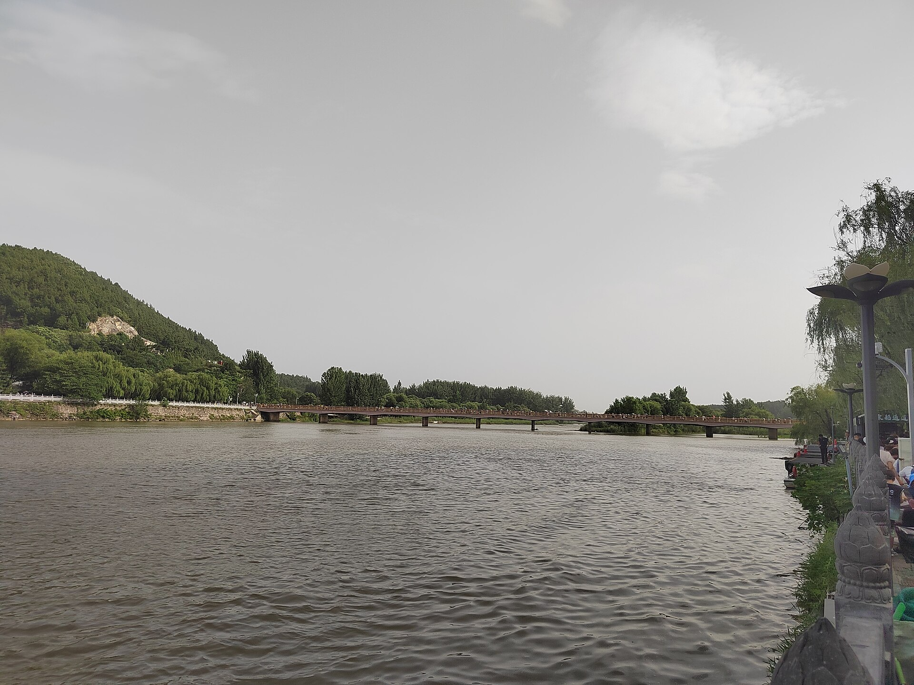

第 1 章
石像的故乡
伊水两岸的石灰岩崖壁上，斧凿声已经响了一千五百年。龙门石窟的清晨总是先从声音开始。伊河的水声是底色，低沉而持续，从南向北穿过两山之间的峡谷。然后是人声——不是说话，是敲击。铁器与石头的撞击声从崖壁上弹回来，被水面反射，在峡谷里来回碰撞，分不清方向。
1907年的一个早晨，这声音比往常更密集。几个本地石匠正攀在宾阳中洞入口内侧的壁面上，用凿子沿着事先画好的墨线，一锤一锤地打进石灰岩里。他们不是在修复，也不是在开凿新的佛龛。


他们在切割。洞窟内的光线很暗。凿子每敲一下，石屑就溅起来，落在他们的袖口和领子里。壁面上已经出现了两道平行的深槽，从顶部一直延伸到离地面约半人高的位置。
石匠们的手很稳。他们知道石灰岩的纹理走向，知道在哪里用力、在哪里收力。这是祖传的手艺。
他们的祖父和曾祖父也曾在这片崖壁上凿过佛龛，刻过碑文。只是那时候，凿子是往石头里加东西——加一尊佛、一行愿文、一个供养人的名字。现在他们在往外取。
壁面上那幅浮雕已经存在了将近一千四百年。它描绘的是一个皇家仪仗队正在行进：皇帝头戴冕旒，在侍从、羽葆和仪仗簇拥下，缓缓走向佛的方向。人物有前有后，衣纹有起有伏，整支队伍仿佛正在壁面深处移动。浮雕的厚度只有几厘米，但工匠利用高低错落的层次感，让石头产生了纵深。清晨的阳光从洞窟东面的入口斜射进来，恰好照亮这支队伍的前半段。光线移动的时候，浮雕上的影子也跟着移动，人物的轮廓在明暗之间浮现又隐没。
这种观看方式不是偶然的。窟门朝东，礼佛图位于入口内侧的南北两壁。每天早晨，当僧侣或信徒步入洞窟，东方的光线从身后照进来，壁面上的礼佛行列便从黑暗中显现，与进入窟内的现实礼拜者迎面相遇。
这是设计好的。浮雕不是挂在墙上的一幅画。它是整个洞窟空间秩序的一部分，与主尊佛像的位置、窟顶的莲花藻井、地面的礼拜区域、以及绕佛右旋的仪轨路线共同构成一个完整的礼仪程序。进入洞窟的人，不是站在画外观看，而是走进画中，成为礼佛队伍的一员。
宾阳中洞开凿于公元六世纪初，是北魏宣武帝为其父母孝文帝和文昭皇太后营造的皇家功德窟。窟内现存碑刻记载了开窟的缘起和供养人的名字。碑文说，宣武帝“仰追罔极之悲”，在伊水之滨“凿山为室，刊石为像”，希望以此功德使父母“升济彼岸”。
这是一项国家工程，动用了宫廷工匠和大量财力。洞窟的每一处细节都经过精心设计：穹窿顶象征天宇，中心莲花藻井是佛教宇宙观的浓缩，南北两壁分层排列的佛传故事浮雕构成一部可视化的经典，而入口两侧的帝后礼佛图则是整个叙事序列的起点和终点。
礼佛图的位置决定了它的观看方式。进入洞窟的人，首先经过皇帝礼佛的壁面，然后在绕行礼拜的过程中依次观看佛传故事，最后在离开时经过皇后礼佛的壁面。整个过程形成一个闭合的环形路线。浮雕的意义不在石头本身，而在它与人、与光、与行走路线之间的互动关系之中。
把它从壁面上取下来，就像从一句话里挖掉一个词。词还是那个词，但语法位置消失了，句子塌了。
法国汉学家爱德华·沙畹在1907年考察龙门时，拍摄了宾阳中洞的完整照片。照片上，帝后礼佛图还完好地嵌在壁面上。浮雕的人物线条流畅，衣纹褶皱的处理方式带有明显的南朝风格影响，与北魏迁都洛阳之后的文化融合进程相呼应。沙畹的照片后来发表在《北中国考古图录》中，成为西方学界认识龙门石窟艺术的重要文献。
但这些照片也意外地充当了另一种功能：它们精确标示了可供切割的目标。照片传到北京、上海的古董市场，再传到欧洲和美国的收藏家手中。人们开始知道，在河南一个叫龙门的地方，崖壁上有一批北魏浮雕，可以切割、可以运输、可以买卖。
沙畹拍摄照片的同一年，一位名叫卢芹斋的年轻人正在巴黎的中国古董店里当学徒。他来自浙江湖州，几年前跟随清廷驻法公使到了欧洲。他还不认识龙门，但他已经学会了辨认石灰岩的纹理。再过几年，他就会知道这些照片的价值。
但1907年的那个早晨，宾阳中洞里的石匠们还不知道这些。他们只知道有人出了钱，要他们把壁面上那两幅浮雕凿下来。
出钱的人不是洋人——至少不是直接出面。中间经过了几层转手：可能是洛阳城里的古董商，可能是省城派来的人，也可能是某个在地方上有势力的绅士。石匠们不问这些。他们只负责把石头从崖壁上分离出来，尽量不弄碎。这是一项技术活。
石灰岩质地相对均匀，但内部有天然的裂隙。凿子的方向必须与裂隙平行，否则整块浮雕会在某一锤下突然断裂。他们先在浮雕四周凿出深槽，然后用长铁钎从背面斜插进去，一点一点地撬。每撬一下，石头与崖壁之间就多出一毫米的缝隙。碎屑簌簌地往下掉，落在洞窟的地面上，和一千多年的香灰混在一起。
这个过程持续了几天。没有人记录确切的时间。地方志上没有记载，寺院的碑刻上没有记载，县衙的档案里也没有留下相关的公文。
这件事发生在一个秩序的缝隙里——旧的秩序已经松动，新的秩序尚未成形。龙门石窟所在的洛阳地区，在二十世纪初叶经历了剧烈的社会变动。
要理解这种变动，需要回溯到更早的历史层面。北魏迁都洛阳之后，龙门便成为皇家石窟寺的集中开凿地。
历代均有续凿，至唐代达到鼎盛。围绕着石窟群，形成了一个完整的寺院经济体系。寺院拥有大量田产，僧侣负责洞窟的日常维护、香火管理和接待香客。供养人捐献的财物支撑着寺院的运转，而寺院则通过宗教服务回馈地方社会。这种互惠结构维持了龙门石窟一千多年的基本秩序。
寺院不需要把佛像当作“文物”来保护，因为佛像本身就是寺院日常生活的组成部分。僧侣每天在窟内诵经、添油、清扫，香客定期来朝拜、许愿、还愿。佛像的维护是宗教实践的一部分，不是一项专门的“保护工作”。
但这个结构在十九世纪后期开始松动。太平天国运动波及河南，地方社会遭受重创。接踵而来的是光绪年间的庙产兴学运动。清廷颁布上谕，要求各地将寺院田产的一部分划拨给新式学堂作为办学经费。政策的初衷是借助寺院的经济资源推动教育现代化，但在执行过程中，地方官员往往借机侵占寺产，士绅也趁机争夺田产的控制权。龙门地区的寺院田产被大量征用，僧侣人数从清代中期的数百人锐减至清末的不足百人。
一些洞窟的看守僧人被迫离开，窟前的木构窟檐因无人修缮而逐渐朽坏坍塌。香火收入大幅下降，寺院无力维持洞窟的日常维护。石窟开始进入一个无人看管的过渡期。
外部世界正在发生变化。1899年，清政府与比利时公司签订合同，开始修建陇海铁路。铁路线从连云港向西延伸，经开封、郑州到达洛阳。1905年，洛阳段通车。
这条铁路改变了洛阳的地理位置。在此之前，从洛阳到沿海口岸需要翻越伏牛山、渡过黄河，行程动辄数周。铁路通车之后，从洛阳到天津只需要三天，到上海只需要五天。时间成本的骤降使洛阳地区的物资流动开始加速。粮食、棉花、煤炭沿着铁路线运往沿海，而外来的工业品、洋货和新的观念也沿着同一条线路进入内陆。
铁路带来的不仅是货物，还有信息。北京的报纸、上海的书刊、外国学者的考察报告，通过铁路网络传入洛阳。地方士绅开始意识到，他们身边那些司空见惯的石窟和佛像，在外面的世界里被看作“古代艺术品”，具有市场价值。
这种认知的转变不是突然发生的，而是一点一点渗透进来的。最初是古董商到洛阳收购铜器、玉器和陶瓷。接着有人开始询问石刻的价格。再后来，有人专程来看石窟，带着照相机和测量工具。
日本学者关野贞在1906年考察龙门，拍摄了大量照片并进行了测绘。他的记录后来发表在日本的学术期刊上，进一步引发了国际学界对龙门石窟的关注。关野贞的考察与沙畹几乎同时，两人互不知情，但他们的工作产生了相似的效果：将龙门石窟从地方性的宗教场所转化为国际性的学术对象。
学术关注本身不是问题，问题在于学术记录与市场需求之间没有防火墙。照片和测绘数据既可以用于研究，也可以用于定位和估价。
需求形成了，供给的链条也随之建立。链条的一端是海外收藏家和博物馆，另一端是崖壁上的石匠。中间是古董商、买办、地方代理人、运输商和海关官员。每个人都在这条链条上找到自己的位置，每个人都为自己的行为找到了合理的解释。
古董商说，这些石刻留在荒山野岭无人看管，迟早毁于兵火或风雨，与其让它们烂掉，不如卖给懂得欣赏的人。地方官员说，卖石刻的钱可以用来修庙、办学、修路，这是以旧换新。石匠们说，这是手艺活，给谁凿不是凿。
这种说辞并非全然虚伪。二十世纪初叶的中国，确实有大量古代建筑和石窟寺因年久失修而坍塌损毁。龙门石窟的窟檐到清末已基本无存，许多洞窟直接暴露在风雨之中。崖壁上的裂隙逐年扩大，一些窟龛的顶部出现渗水，佛像表面开始风化剥落。
地方士绅和僧侣并非不关心石窟的命运，但他们面临的选择很有限。修缮一座洞窟需要大笔资金，而寺院的收入连维持僧侣的基本生活都捉襟见肘。在这种情况下，出售部分石刻以换取修缮经费，在当时的逻辑里并非不可理喻。
但问题在于，一旦链条形成，它就有了自己的逻辑。最初出售的可能只是一些残损的佛首或脱落的碑刻碎片，但当这些碎片在海外卖出高价后，需求开始升级。古董商不再满足于残件，他们开始要求完整的造像。价格随之攀升，刺激更多的人加入这个行业。
一些地方代理人开始主动与寺院接洽，提出“以新换旧”的方案：出资为寺院修建新的佛殿或校舍，作为交换，寺院允许他们取走指定的石刻。这种交易在当时的法律框架下处于灰色地带。清政府没有专门的文物保护法规，地方官员对石窟的管理权限模糊，寺院的财产权也没有明确的法律界定。交易的合法性取决于谁来解释、对谁解释。
宾阳中洞帝后礼佛图的盗凿，就是在这个灰色地带中完成的。没有证据表明这件事经过了正式的审批程序，也没有证据表明它被正式禁止。它发生在一个无人负责的间隙里。
寺院无力阻止，地方官无意过问，石匠们把它当作一单普通的活计。浮雕被从壁面上凿下来，碎成几块，用草绳和粗布包裹，装进木箱。箱子被抬出洞窟，沿着崖壁上的栈道往下走，经过奉先寺的大佛脚下，经过伊河上的石桥，最后装上一辆骡车。骡车沿着通往洛阳城的土路，颠簸着消失在尘土里。洞窟里安静下来。壁面上留下了两个巨大的长方形空洞。切口很新，石灰岩的断面呈浅灰色，与周围被香火熏成深褐色的壁面形成刺目的对比。
空洞的边缘参差不齐，凿子的痕迹清晰可辨。原先浮雕所在的位置，现在只剩下粗糙的凿痕和几处残留的衣纹局部——一截衣袖的褶皱、一只脚的前半部分、仪仗羽葆的末梢。这些残留的细节比完全消失更令人不安。它们证明了这里曾经有过什么，也证明了那个东西已经不在了。
阳光照进来的时候，空洞投下两块巨大的阴影，恰好落在对面壁面的佛传故事浮雕上。这个空洞本身成了一件新的“作品”——它记录的不是北魏皇室的礼佛场景，而是二十世纪初叶石窟从圣地滑向采石场的那一刻。
空洞的形状是不规则的。它不是被设计出来的，而是被剩下的。它不属于任何收藏目录，不会被运往海外，不会在任何博物馆的展厅里获得一面展墙和一段说明文字。它只是留在那里，留在原来的位置上，成为一个缺失的物理证据。
在这之后的几十年里，当地人对这个空洞有各种不同的说法。有的说，那两幅浮雕是被洋人买走的，用轮船运到了外国。有的说，是省城派来的人取走的，拿去修了什么工程。
还有的说，是寺里的和尚卖的，卖的钱用来修了庙——庙倒是真的修了，只是修的不是龙门，是别处的庙。说法不一，但没有一种说法能把整件事说清楚。因为整件事本来就不是一个人、一个原因造成的。它是一个过程，缓慢而持续，由许多微小的决定累积而成。
每一个决定在当时看来都不算大：一个僧侣同意出售一块残损的碑刻，一个村长默许外来的石匠在崖壁上作业，一个县官在呈文上批了“照准”，一个海关关员在报关单上写下“石雕工艺品”。这些决定分开来看，都不构成“盗凿”或“掠夺”。但合在一起，它们完成了一次文化解释权的转移。
解释权的转移不是一次性的，而是分层进行的。第一层转移发生在原境内部：当寺院经济衰败、僧侣流散之后，石窟的命名权和解释权从僧侣手中转移到地方士绅和官员手中。僧侣把佛像看作礼拜对象，士绅把它看作地方古迹，官员把它看作可调动的资源。第二层转移发生在市场环节：当石刻进入古董交易网络之后，它的身份从“宗教圣物”或“地方古迹”转变为“可流通的商品”。
古董商给它定价、分类、编目，赋予它新的命名方式——不再叫“宾阳中洞入口北壁浮雕”，而叫“北魏皇帝礼佛图”。第三层转移发生在海外博物馆：当浮雕碎片被重新拼接、安装在人造壁面上、配以灯光和说明牌之后，它成为“亚洲艺术”或“中国艺术”的标本。
在这个新的语境里，它的价值不再来自它与石窟、与光线、与仪轨的关系，而来自它在艺术史序列中的位置——它是北魏石刻艺术的代表作，是佛教艺术中国化的关键例证，是东亚雕塑传统的重要组成部分。每一次转移都生产出新的“原作”。在龙门石窟的崖壁上，原作是那个与光、与人、与声音共生的浮雕。
在北京古董店的货单上，原作是一批可以分割、可以单独出售的石刻组件。在纽约大都会艺术博物馆的展厅里，原作是一幅被修复完整、被灯光均匀照亮的北魏浮雕艺术品。它们都是真的，但它们不是同一个东西。帝后礼佛图离开壁面之后，经过了漫长的旅程。浮雕碎片被分批运出中国，经由不同的路线进入国际市场。
一部分经北京、天津运往日本，在神户上岸，进入山中商会的仓库。另一部分经上海运往欧洲，在马赛或汉堡的港口被重新装箱，运往巴黎或柏林的拍卖行。它们在拍卖行的图录上以不同的编号出现，价格逐级攀升。一些碎片在运输过程中再次碎裂，修复师用石膏和胶合剂将它们重新拼接。
拼接的痕迹至今可见——在博物馆的灯光下，细心的观众能发现某些人物之间有一条细细的接缝，那是当年凿子打进去的位置。最终，皇帝礼佛图的大部分碎片被纽约大都会艺术博物馆收藏，皇后礼佛图则进入了堪萨斯城的纳尔逊-阿特金斯艺术博物馆。
在这两个博物馆里，碎片被重新拼接、修复，安装在人造壁面上，配以恒定的灯光和学术性的说明牌。它们被重新命名为“北魏浮雕《皇帝礼佛图》”和“北魏浮雕《皇后礼佛图》”，归属于“亚洲艺术”或“中国艺术”的收藏门类。这是一个新的语境。在这个语境里，它们是艺术品，是文化遗产，是人类创造力的见证。它们被保护得很好。
温湿度受到严格控制，灯光经过精密计算，每年有数十万观众在它们面前驻足。它们不再需要承受香火的熏烤，不必担心风雨侵蚀，也不会再有人拿着凿子靠近它们。
但它们也不再是礼佛图了。礼佛图是一个动词性的存在：它存在于光线移动的瞬间，存在于绕行礼拜的路线中，存在于香火烟气与诵经声交织的空间里。当它被固定在博物馆的展墙上，灯光恒定，视角固定，观众站在一米线外安静地观看——它变成了一件名词性的物品。
这不是损失，是转换。转换的过程中，一些东西被保存下来，另一些东西被取消了。被保存的是石头的物质形态和部分视觉信息。被取消的是石头与光、与人、与声音、与季节、与每日重复的仪式之间的全部关系网络。这个关系网络没有形状，无法装箱运输，无法标注在藏品目录上。
它是原境。原境不是地点，不是GPS坐标。它是使一件物品成为它原来所是的那个东西的全部条件。当条件改变，物品本身也改变了——即使它的物质形态完好无损。
一个在石窟里被香火熏了一千年的佛首，与一个在博物馆恒温恒湿玻璃柜里的佛首，是两件不同的东西。它们有相同的形状、相同的材质、相同的化学成分，但它们与周围世界的关系完全不同。前者是仪式的参与者，后者是展览的对象。前者接受香火的熏烤，后者接受目光的注视。前者在黑暗中等待黎明第一缕光线，后者在恒定灯光下永不入夜。这种转换的后果不是单向的。
海外博物馆的收藏确实保护了浮雕的物质生命。如果没有那次切割和运输，帝后礼佛图可能会在随后的军阀混战、抗日战争或自然风化中损毁。龙门石窟在二十世纪确实经历了多次危机：1920年代的地方武装冲突波及龙门，一些洞窟被流弹击中；1940年代的战争期间，石窟无人看管，部分造像遭到人为破坏；
一九六〇至七〇年代，一些佛首在政治运动中被打砸。留在原地的文物并非都安然无恙。从这个角度看，“与其毁于兵火不如售于识者”的说法并非完全没有道理。
但这个说法的盲点在于，它把“保存”等同于“物质形态的延续”，而忽略了保存行为本身也在改变被保存之物的性质。博物馆的保存是一种选择性的保存：它保存了石头，但取消了石头与光的关系；保存了形象，但取消了形象与仪轨的关系；保存了文物，但取消了文物与地方记忆的关系。
这些被取消的部分，在博物馆的说明牌上不会出现。说明牌会告诉你浮雕的年代、材质、尺寸、风格特征和艺术史意义，但不会告诉你它曾经在每天早晨被一束移动的光照亮，不会告诉你它曾经是绕行礼拜路线的一部分，不会告诉你当地人在空洞前流传的那些说法。这是解释权转移的深层后果。
当一件文物离开原境进入博物馆，关于它的知识生产也随之转移到新的权威手中。博物馆的策展人、艺术史学者、修复师和藏品管理员成为文物新的命名者。他们用学术语言重新描述文物，将它编入艺术史的时间序列和风格分类体系。这种描述是专业的、精确的、有学术价值的，但它也是一种新的解释。
在这种解释中，礼佛图被理解为“北魏石刻艺术”的标本，而不是“宾阳中洞入口北壁”的组成部分。前一种理解使它可以被放在任何一面展墙上，与来自其他石窟、其他时代的石刻并列比较。后一种理解则要求它必须留在那个特定的壁面上，在那个特定的光线角度下，被以特定的路线和方式观看。龙门石窟的崖壁上，那个空洞还在。经过一个多世纪的风雨，切口的边缘不再锋利，石灰岩表面长出了薄薄的苔藓，颜色渐渐与周围的壁面趋近。
但形状没有变。它仍然是一块不规则的空白，嵌在布满浮雕的壁面上，像一个无法闭合的括号。每天早晨，阳光仍然从东面的窟门射进来，照亮对面的佛传故事浮雕。只是现在，光线也会照进那个空洞里。空洞内部是黑暗的，阳光只能照到切口边缘，在那里形成一条明亮的轮廓线。从某个角度看过去，这条轮廓线恰好勾勒出当年礼佛队伍最前端的位置——那个位置现在什么都没有，只有空气和石头内部的黑暗。伊河的水声仍然在响。从峡谷里往上看，崖壁上的窟龛密密麻麻，像蜂巢一样排列着。
大多数窟龛里还有佛像，有的完整，有的残损，有的只剩下一个轮廓。游客从栈道上走过，在宾阳中洞的入口处停下来，听导游讲解那两块被盗凿的浮雕。导游说，它们现在在美国的博物馆里。游客们往里看，看见壁面上两个空洞，有的拍照，有的摇头，有的什么也没说，继续往前走。斧凿声早已停了。
但空洞还在，而且会一直在。它是整件事开始的地方。那些被运走的碎片，在大洋彼岸的博物馆里获得了恒定的温度、湿度和灯光，获得了学术性的命名和分类，获得了每年数十万观众的注视。而这个空洞获得了另一种东西——它获得了沉默。沉默里没有说明牌，没有策展人撰写的展墙文字，没有精心设计的灯光角度。它只是留在那里，留在原来的位置上，用粗糙的凿痕和残留的衣纹碎片，记录着一次切割的形状。
记录着一次切割的形状。并非所有被带走的碎片都获得了这样的“保存”。在同一时期，远在新疆的柏孜克里克千佛洞，第20窟甬道壁上那些绘有十五幅《佛本行集经变相》的壁画，因长期被沙土掩埋而保存良好。它们也被技术精湛地切割、揭取，装入木箱，运往柏林。切割者阿尔伯特·冯·勒柯克同样怀有“保存”的信念。
然而，1945年，盟军的炸弹落在柏林，这些精心保存的碎片中的大部分，在博物馆的仓库里化为灰烬。为保存而切下，却毁于保存之地——这是另一种沉默，一种更彻底的、关于物质本身的沉默。它提醒我们，流散的终局并非只有博物馆展厅里那种被凝视的、永恒的静止。而此刻，在吉美博物馆柔和的灯光下，那个来自响堂山的佛首，正以其被修整过的平整断口，等待着我们。